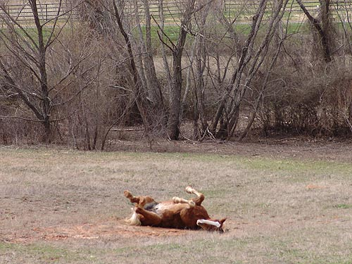
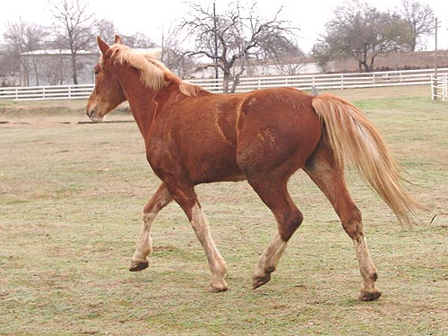
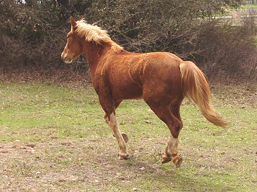
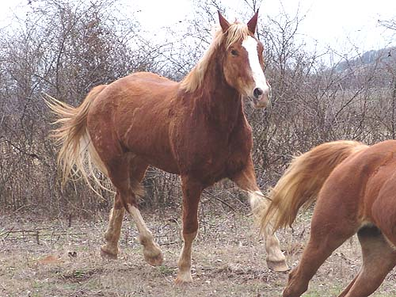
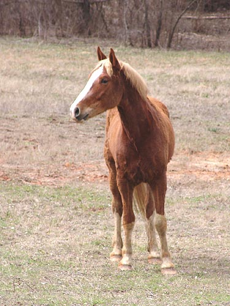
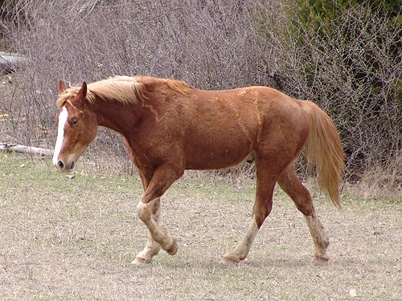
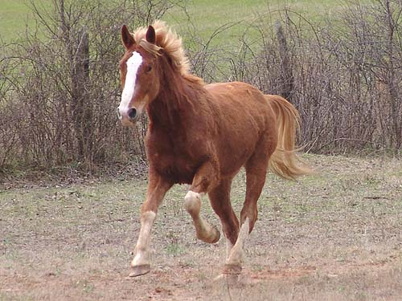
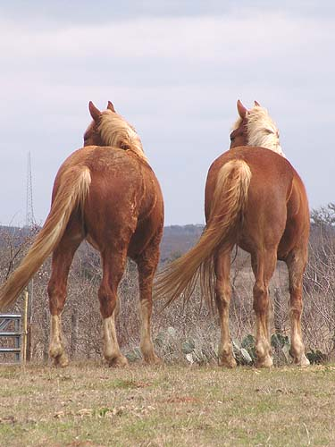

Wiley Wiley worries a bit more than Angel. He's
bonded
with her, so working with him is more
of a challenge.
We're hoping to separate them after a
few weeks to
see if that helps him focus more. He's
got a lot more go
than her and will hopefully be quite athletic
for jumping.

Finding the one roll spot with clay
and taking advantage.

Right after he got off the trailer
at my place. He's got more knee action than Angel.

Canter seems to be his favorite gait.

He has no trouble animating his trot.

He's got a more refined head than
Angel. His legs are as sturdy, and he also looks like he's got some room
to grow and mature.

I'll probably get up on them by next
month to see where their training is. They're both supposed to be w/t/c
under saddle, and their reaction to bridling and saddling supported that.

He's got some lift in the canter.

Angel on the right is probably an
inch taller than Wiley. They're supposed to mature around 15.3/16 hh. Height
doesn't matter so much, but I'm really curious to see how they muscle up.